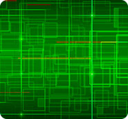

контрактное производство
Компания "Синватек" располагает высокотехнологичным производством, двумя линиями автоматического монтажа и предлагает своим заказчикам услуги самого высокого качества. Отвечающие современным требованиям технические мощности нашей компании позволяют реализовывать самые сложные проекты для всех производителей электроники и ориентированы на широкий круг промышленных потребителей.
Мы предлагаем полный спектр услуг по контрактной сборке электроники. Услуги оказываются как в комплексе, так и по отдельности.Давно уже не секрет, что контрактное производство электроники – это эффективный рыночный механизм, который позволяет производить электронику современного уровня сложности, с высоким качеством и минимальными затратами. Сегодня среди наших клиентов присутствуют представители практически всех отраслей промышленности, где используется электроника. У нас нет ограничений на минимальный заказ - мы делаем и небольшие партии, и серийную продукцию.
Основа технической политики компании - высокое качество по оптимальным ценам. Добиваться стабильно высоких результатов нам позволяет высокая эффективность и производительность труда персонала и принятая на производстве многоступенчатая система контроля качества.
Виды работ по контрактному производству электроники:
- разработка схемотехнических решений;
- проектирование печатных плат, адаптация под серийное производство;
- проектирование и заказ трафаретов для поверхностного монтажа;
- поверхностный монтаж (автоматический, полуавтоматический);
- монтаж выводных элементов (полуавтоматический, ручной);
- ремонт печатных узлов (перепайка QFP- и BGA-компонентов, реболлинг);
- проектирование корпусов;
- нанесение влагозащитных покрытий на печатные узлы;
- первоначальная проверка и наладка готовых изделий (испытание и прогон на стендах);
- корпусная сборка;
- сборка шкафов;
- сборка кабелей и жгутов.
Возможности
Конструкторский отдел имеет опыт проектирования одно-, двух- и многослойных печатных плат в соответствии со стандартами IPC-7351A «Общие требования по конструированию контактных площадок и печатных плат с применением технологии поверхностного монтажа», IPC-7095B «Проектирование и внедрение процессов сборки с применением BGA», ГОСТ 23751-86. Гарантируется соответствие спроектированной печатной платы требованиям технического задания.
Технология выполнения сборочно-монтажных работ ведется в соответствии с российскими стандартами, а также с международными рекомендациями IPC. Оборудование предприятия полностью адаптировано для работы по бессвинцовой технологии. Производительность автоматической линии поверхностного монтажа составляет 40 000 компонентов в час, имеется автоматическая оптическая инспекция. Технологические возможности позволяют выполнять автоматический монтаж широчайшего спектра компонентов: от чип-компонентов типоразмера 01005 — до микросхем QFP или BGA размером до 45×45 мм, при минимальном шаге выводов 0,3 мм. Минимальные размеры платы 50×50 мм, максимальные — 400×460 мм. Возможно изготовление пробной партии изделий.
На конкретный вид изделия согласно исходным данным Заказчика проектируется и адаптируется под оборудование поверхностного монтажа трафарет; качество изготовления трафаретов подтверждается наличием акта о проверке каждого трафарета. Проектирование трафарета не входит в стоимость подготовки производства.
Монтаж компонентов производится на современном профессиональном оборудовании, чем достигается высокая точность, минимальное время монтажа, а также полностью исключаются повреждения компонентов в процессе пайки. Каждое рабочее место радиомонтажника оборудовано профессиональными паяльными станциями «JBC Advanced», «Актаком», системами антистатической защиты, а также вытяжной вентиляцией. Наличие системы ручного дозирования паяльной пасты позволяет применить полуавтоматический монтаж как SMD-, так и DIP-элементов с последующим оплавлением припоя в печах конвекционного оплавления «Mistral 360», «Mistral 260».